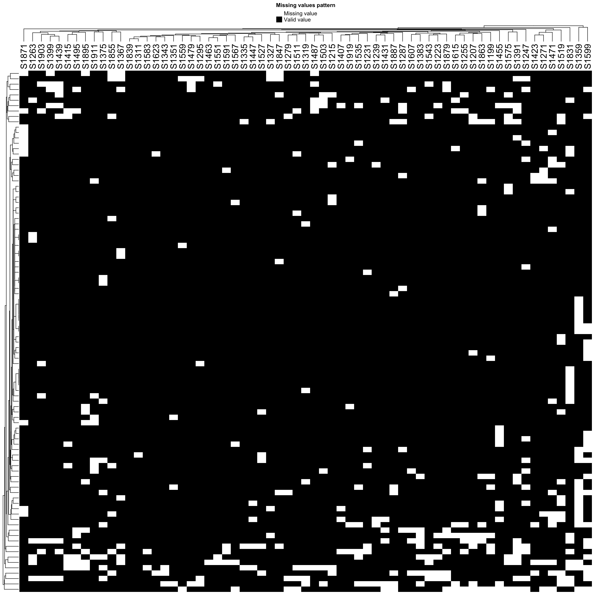

Exploratory analysis and quality check of the SMARTrial proteomic/metabolomic data
Last updated: 2024-05-28
Checks: 5 1
Knit directory: SMARTrial/analysis/
This reproducible R Markdown analysis was created with workflowr (version 1.7.0). The Checks tab describes the reproducibility checks that were applied when the results were created. The Past versions tab lists the development history.
Great job! The global environment was empty. Objects defined in the global environment can affect the analysis in your R Markdown file in unknown ways. For reproduciblity it’s best to always run the code in an empty environment.
The command set.seed(20220425) was run prior to running
the code in the R Markdown file. Setting a seed ensures that any results
that rely on randomness, e.g. subsampling or permutations, are
reproducible.
Great job! Recording the operating system, R version, and package versions is critical for reproducibility.
Nice! There were no cached chunks for this analysis, so you can be confident that you successfully produced the results during this run.
Great job! Using relative paths to the files within your workflowr project makes it easier to run your code on other machines.
Tracking code development and connecting the code version to the
results is critical for reproducibility. To start using Git, open the
Terminal and type git init in your project directory.
This project is not being versioned with Git. To obtain the full
reproducibility benefits of using workflowr, please see
?wflow_start.
Set up
Process patient clinical annotations
Get patient clinical annotation from SMARTrial screen data
load("../data/01_preprocessed_invivo_data.RData")
df_invivo <- df_invivo %>% select(-c(Sonstige_Mutationen, lines_pretreatment_cat,
time_from_ED, time_from_ED_dich, Sonstige_Aberrationen,
Response_def_parameter_final, Response_not_evaluable,
Reason_response_not_evaluable, Resp_protocol_comment,
time_diarel_treatment)) %>%
mutate(across(NPM1:`Trisomy 8q24`, as.numeric)) %>%
mutate(Resp_protocol = ifelse(Resp_protocol == "na", NA, Resp_protocol))
patAnno <- DataFrame(df_invivo)
rownames(patAnno) <- patAnno$patientIDRead sample/patient metadata from OpenBis table
patTabNew <- readxl::read_xlsx("../data/20230807_SMART_SC006_final.xlsx")Final SMARTrail patients that are not in the OpenBis annotation
filter(df_invivo, !patientID %in% patTabNew$SMART_ID) %>% arrange(patientID)# A tibble: 27 × 47
patientID Date_birth Sex Date_of_inclusion age Date_report time_report
<chr> <date> <fct> <date> <dbl> <date> <drtn>
1 S005 1987-07-15 Male 2018-04-27 31 2018-05-02 5 days
2 S008 1962-07-15 Male 2018-05-04 56 2018-05-06 2 days
3 S012 1937-07-15 Male 2018-06-11 81 2018-06-13 2 days
4 S019 1967-07-15 Female 2018-07-18 51 2018-07-20 2 days
5 S022 1947-07-15 Male 2018-08-07 71 2018-08-10 3 days
6 S025 1994-07-15 Male 2018-10-02 24 2018-10-04 2 days
7 S027 1954-07-15 Male 2018-10-04 64 2018-10-10 6 days
8 S035 1943-07-15 Male 2018-11-23 75 2018-11-28 5 days
9 S040 1945-07-15 Male 2019-01-08 74 2019-01-10 2 days
10 S042 1941-07-15 Male 2019-01-23 78 2019-01-25 2 days
# ℹ 17 more rows
# ℹ 40 more variables: material <fct>, tumor_infiltration <dbl>,
# date_diagnosis <date>, diagnosis <chr>, Pretreatment <chr>,
# lines_pretreatment <dbl>, pretreatment_spec <chr>, NPM1 <dbl>, CEBPA <dbl>,
# FLT3 <dbl>, FLT3_ITD_ratio <dbl>, FLT3_TKD <dbl>, IDH1 <dbl>, IDH2 <dbl>,
# `bcr-abl` <dbl>, IGHV.status <dbl>, TP53 <dbl>, BIRC3 <dbl>, CAK <dbl>,
# MLL_rearragement <dbl>, `t(15;17)` <dbl>, Del17p <dbl>, `Del 11q` <dbl>, …Patients included currently but not in the final SMARTrial list
filter(patTabNew, !SMART_ID %in% df_invivo$patientID) %>% arrange(SMART_ID)# A tibble: 13 × 21
SMART_ID DIETRICH_ID OMZ_ID SC_SAMPLE_ID SC_ALIQUOT_ID SEX MATERIAL DISEASE
<chr> <chr> <chr> <chr> <chr> <chr> <chr> <chr>
1 A003 18SCPB0315 OMZP0… SC_H_S1199 A1200 m PB CLL
2 A006 19LN0159 NA SC_H_S1871 A1872 m LN CLL
3 A008 19LN0183 NA SC_H_S1855 A1856 m LN DLBCL
4 A010 19SCPB0145 OMZP0… SC_H_S1207 A1208 m PB DLBCL
5 A012 19LN0187 NA SC_H_S1879 A1880 f LN DLBCL
6 DRP 20SCPB0157 OMZP0… SC_H_S1615 A1616 m PB CLL
7 DRP 20SCPB0159 OMZP0… SC_H_S1607 A1608 m PB CLL
8 DRP 21SCPB0009 OMZP0… SC_H_S1599 A1600 m PB CLL
9 DRP 21LN0303 NA SC_H_S1863 A1864 m LN FL
10 DRP 19SCPB0167 OMZP0… SC_H_S1887 A1888 m PB CLL
11 DRP 20SCPB0017 OMZP0… SC_H_S1623 A1624 m PB AML
12 S059 19LN0169 NA SC_H_S1903 A1904 f LN FL
13 S084 20SCBM0030 OMZP0… SC_H_S1575 A1576 m BM AML
# ℹ 13 more variables: INITIAL_FREEZING <chr>, COMMENT <chr>,
# CELL_NUMBER_THAWED <chr>, ENRICHMENT <chr>, DEAD_CELL_REMOVAL <chr>,
# THAW_BATCH <dbl>, THAW_DATE <dttm>, PROTEOMICS <dbl>, METABOLOMICS <dbl>,
# GENOMICS <dbl>, BACKUP_PELLET_AVAILABLE <dbl>,
# `CELL_NUMBER_SUBMITTED (x10^6)` <chr>, PERCENT_VIABILITY <dbl>After manual check, these samples are indeed not in the SMARTrial drug screen data, therefore I don’t have their in vivo response data. But their information is perhaps somewhere in the database.
Wehter the information is consistent among the overlapped samples?
compareTab <- patTabNew %>% select(SMART_ID, SEX, MATERIAL, DISEASE,SC_ALIQUOT_ID) %>%
filter(SMART_ID %in% intersect(patTabNew$SMART_ID, df_invivo$patientID)) %>%
left_join(select(df_invivo, patientID, Sex, material, diagnosis) %>%
mutate(Sex = ifelse(Sex == "Male","m","f")), by = c(SMART_ID = "patientID"))
compareTab %>%
filter(SEX!=Sex | MATERIAL != material | DISEASE != diagnosis)# A tibble: 3 × 8
SMART_ID SEX MATERIAL DISEASE SC_ALIQUOT_ID Sex material diagnosis
<chr> <chr> <chr> <chr> <chr> <chr> <fct> <chr>
1 S020 f PB CLL A1304 m PB T-PLL
2 S082 f PB MZL/DLBCL A1560 f PB DLBCL
3 S013 f PB CLL/DLBCL A1265 f PB DLBCL Based on Onkostar annotation, S020 should be a male T-PLL patient, instead of female CLL case. S082 and S013 are DLBCL with transformation from MZL and CLL. Here, they will be annotated as DLBCL
Create new annotation table
Also fix some potential issues
patAnno <- patTabNew %>%
left_join(df_invivo, by = c(SMART_ID = "patientID")) %>%
mutate(sampleID = str_remove(SC_SAMPLE_ID, "SC_H_"),
Aliquot.cell.number = as.numeric(`CELL_NUMBER_SUBMITTED (x10^6)`),
DISEASE = ifelse(DISEASE %in% c("MZL/DLBCL","CLL/DLBCL"),"DLBCL",DISEASE)
) %>%
mutate(DISEASE = ifelse(SMART_ID == "S020","T-PLL",DISEASE),
SEX = ifelse(SMART_ID == "S020","m",SEX)) %>%
dplyr::select(-Sex, -material, -diagnosis) %>%
mutate(SMART_ID = ifelse(SMART_ID == "DRP", DIETRICH_ID, SMART_ID)) #If SMART_ID is DRP (not included in the SMARTrial but with drug screen data), change the SMART_ID to DIETRICH_ID, which is the sampleID used in Drug screeningPatients without in-vivo response annotation
dplyr::filter(patAnno, is.na(Resp_protocol)) %>%
select(sampleID, SMART_ID, DIETRICH_ID, OMZ_ID, DISEASE, Resp_protocol)# A tibble: 21 × 6
sampleID SMART_ID DIETRICH_ID OMZ_ID DISEASE Resp_protocol
<chr> <chr> <chr> <chr> <chr> <chr>
1 S1535 S077 20SCPB0013 OMZP0410 MCL <NA>
2 S1199 A003 18SCPB0315 OMZP0060 CLL <NA>
3 S1343 S030 18SCPB0252 OMZP0088 CLL <NA>
4 S1367 S034 18SCPB0391 OMZP0242 CLL <NA>
5 S1207 A010 19SCPB0145 OMZP0398 DLBCL <NA>
6 S1615 20SCPB0157 20SCPB0157 OMZP0556 CLL <NA>
7 S1351 S032 18SCPB0376 OMZP0295 CLL <NA>
8 S1607 20SCPB0159 20SCPB0159 OMZP0558 CLL <NA>
9 S1303 S020 18SCPB0291 OMZP0251 T-PLL <NA>
10 S1599 21SCPB0009 21SCPB0009 OMZP0217 CLL <NA>
# ℹ 11 more rowsAfter manual check, some of those samples can be categorized into responder or non-responder, although they were not included in the final SMARTrial study
Based on the table 2022-02-06_SMART_onkostar_data.xlsx
responseManual <- c(S1535 = "PD", S1199 = "PD", S1343 = "R", S1367 = "PD", S1207 = "PD", S1615 = NA,
S1351 = "SD", S1607 = NA, S1303 = "SD", S1599 = NA, S1855 = "PD", S1871 = "PD",
S1879 = "PD", S1887 = NA, S1903 = "PD", S1327 = NA, S1575 = "PD",
S1567 = NA, S1407 = NA)
patAnno <- mutate(patAnno, Resp_manual = ifelse(is.na(Resp_protocol), responseManual[sampleID], Resp_protocol))“Organ/tumor manifestation” as “PD”, correct? Some sample don’t have SMART-ID, they could not be annotated. S024,S083, S045 died before treatment.
patAnno <- patAnno %>% column_to_rownames("sampleID") %>% DataFrame()
patAnno$sampleID <- rownames(patAnno)
dim(patAnno)[1] 66 67Export a table of current information
writexl::write_xlsx(as_tibble(patAnno), "../output/patient_annotation_in_vivo.xlsx")Process and QA of proteomic data
Read new dataset from Karim
protTab <- read_tsv("../data/20230916_SMARTTrail_oldPrep_2nd_TimsTOF.pg_matrix.tsv")
#whether no duplication of protein groups?
all(!duplicated(protTab$Protein.Group))[1] TRUEexprMat <- select(protTab, Protein.Group, starts_with("A")) %>%
column_to_rownames("Protein.Group") %>% as.matrix()
colnames(exprMat) <- patAnno[match(colnames(exprMat), patAnno$SC_ALIQUOT_ID),]$sampleID
rowAnno <- select(protTab, !starts_with("A")) %>%
column_to_rownames("Protein.Group") %>%
dplyr::rename(protein_ids = "Protein.Ids", protein_names = "Protein.Names") %>%
DataFrame()
protData <- SummarizedExperiment(assays = list(count = exprMat),
rowData = rowAnno,
colData = patAnno[colnames(exprMat),])Add total intensity to meta data
protData$total_intensity <- colSums(log2(assay(protData)),na.rm = TRUE)
protData$miss_rate <- colSums(is.na(assay(protData)))/nrow(protData)Quality check
Patient annotations
Read and preprocess
rowData(protData)$ID <- rowData(protData)$protein_ids
rowData(protData)$name <- rowData(protData)$protein_names
rowData(protData)$protein_ids <- NULL
rowData(protData)$protein_names <- NULL
dim(protData)[1] 10244 66Examin the data distrubution
countMat <- assay(protData)
dim(countMat)[1] 10244 66boxplot(log2(countMat))Missing value per sample
plotTab <- tibble(sample = protData$sampleID,
perNA = colSums(is.na(countMat))/nrow(countMat),
total = colSums(log2(countMat), na.rm=TRUE),
medVal = colMedians(log2(countMat), na.rm=TRUE),
diagnosis = protData$DISEASE,
material = protData$MATERIAL)
ggplot(plotTab, aes(x=sample, y=1-perNA, fill = material)) +
geom_bar(stat = "identity") +
ylab("completeness") +
theme(axis.text.x = element_text(angle = 90, hjust = 1, vjust=0)) +
facet_wrap(~diagnosis, scale = "free_x", ncol=3)Missing value cut-off versus number of remaining proteins
missPer <- rowSums(is.na(countMat))/ncol(countMat)
sumTab <- lapply(seq(0,1,by = 0.01), function(x) tibble(cut = x, freq = sum(missPer < x)/length(missPer))) %>% bind_rows()
ggplot(sumTab, aes(x=cut, y=freq)) + geom_line() + xlab("Missing value cut-off") + ylab("Percent remaining") +
scale_x_continuous(breaks = seq(0,1, 0.1))Total intensity
ggplot(plotTab, aes(x=sample, y=total, fill = material)) +
geom_bar(stat = "identity") +
ylab("total intensity") +
theme(axis.text.x = element_text(angle = 90, hjust = 1, vjust=0)) +
facet_wrap(~diagnosis, scale = "free_x", ncol=3) Median Intensity
ggplot(plotTab, aes(x=sample, y=medVal, fill = material)) +
geom_bar(stat = "identity") +
ylab("Median intensity") +
theme(axis.text.x = element_text(angle = 90, hjust = 1, vjust=0)) +
facet_wrap(~diagnosis, scale = "free_x", ncol=3) Boxplots showing the distribution
boxTab <- assay(protData) %>% as_tibble(rownames = "id") %>%
pivot_longer(-id) %>%
mutate(perNA = plotTab[match(name, plotTab$sample),]$perNA) %>%
mutate(name = factor(name, levels = arrange(plotTab, desc(medVal))$sample))
ggplot(boxTab, aes(x=name, y=log2(value))) +
geom_boxplot(aes(fill = perNA)) +
theme(axis.text.x = element_text(angle = 90, hjust = 1, vjust = 0.5))Completeness versus total
ggplot(plotTab, aes(x=1-perNA, y=total)) +
geom_point()median versus total
ggplot(plotTab, aes(x=medVal, y=total)) +
geom_point()median versus completeness
ggplot(plotTab, aes(x=medVal, y=1-perNA)) +
geom_point()Pairwise-MA plot
Function for MA plot give a sample list
plotMA <- function(sampleList, protData, sampleList2 = NULL, logTransform=FALSE) {
if (is.null(sampleList2)) {
allCombo <- combn(sampleList, 2)
} else {
n1 <- length(sampleList)
n2 <- length(sampleList2)
allCombo <- matrix(rep(NA, n1*n2*2), nrow=2, ncol=n1*n2)
n <- 1
for (each1 in sampleList) {
for (each2 in sampleList2) {
allCombo[,n] <- c(each1, each2)
n <- n + 1
}
}
}
if (logTransform) {
assay(protData) <- log2(assay(protData))
}
pList <- apply(allCombo, 2, function(x) {
exp1 <- assay(protData)[,x[1]]
exp2 <- assay(protData)[,x[2]]
eachTab <- tibble(M = exp1-exp2, A = (exp1+exp2)/2)
ggplot(eachTab, aes(x=A,y=M)) +
geom_point(shape =1) +
geom_smooth(se=FALSE, color = "red") +
ggtitle(sprintf("%s ~ %s",x[1],x[2])) +
theme(plot.title = element_text(size=8))
})
cowplot::plot_grid(plotlist = pList, ncol=2)
}Samples with most missing values
sampleList <- arrange(plotTab, total)$sample[1:5]
plotMA(sampleList, protData, logTransform = TRUE)
Samples with least missing values
dsampleList <- arrange(plotTab, perNA)$sample[1:5]
plotMA(sampleList, protData, logTransform = TRUE)Between samples of most and list missing values
sampleList1 <- arrange(plotTab, perNA)$sample[1:4]
sampleList2 <- arrange(plotTab, desc(perNA))$sample[1:4]
plotMA(sampleList1, protData, sampleList2 = sampleList2, logTransform = TRUE)Remove proteins with more than 50% missing values
cut=0.5
protData_filter <- protData[rowSums(is.na(assay(protData)))/ncol(protData) <= cut,]
dim(protData_filter)[1] 8312 66#assayNames(protData_filter) <- "norm"VSN
assay(protData_filter) <- vsn::justvsn(assay(protData_filter))Mean Sd relationship
vsn::meanSdPlot(assay(protData_filter))
Boxplots showing the distribution after VSN
boxTab <- assay(protData_filter) %>% as_tibble(rownames = "id") %>%
pivot_longer(-id) %>%
mutate(perNA = plotTab[match(name, plotTab$sample),]$perNA) %>%
mutate(name = factor(name, levels = arrange(plotTab, desc(medVal))$sample))
ggplot(boxTab, aes(x=name, y=value)) +
geom_boxplot(aes(fill = perNA)) +
theme(axis.text.x = element_text(angle = 90, hjust = 1, vjust = 0.5))Impute missing values using bpca
Using BPCA imputation
protData_imp <- DEP::impute(protData_filter, fun = "bpca")#add bpca imputed data
assays(protData_filter)[["imputed"]] <- assay(protData_imp)Mean Sd relationship after imputation
vsn::meanSdPlot(assay(protData_imp))Boxplots showing the distribution after imputation
boxTab <- assay(protData_imp) %>% as_tibble(rownames = "id") %>%
pivot_longer(-id) %>%
mutate(perNA = plotTab[match(name, plotTab$sample),]$perNA) %>%
mutate(name = factor(name, levels = arrange(plotTab, desc(medVal))$sample))
ggplot(boxTab, aes(x=name, y=value)) +
geom_boxplot(aes(fill = perNA)) +
theme(axis.text.x = element_text(angle = 90, hjust = 1, vjust = 0.5))Created the final object for analysis
protSmart <- protData_filter
protSmart_raw <- protData
save(protSmart, protSmart_raw, file = "../output/protSmart_new.RData")Exploratory data analysis
PCA
exprMat <- assays(protSmart)[["imputed"]]
sds <- genefilter::rowSds(exprMat)
exprMat <- exprMat[order(sds, decreasing = TRUE)[1:5000],]
smpAnno <- colData(protSmart) %>% as_tibble()
pcRes <- prcomp(t(exprMat), scale. = TRUE, center = TRUE)
pcTab <- pcRes$x[,1:10] %>%
as_tibble(rownames = "sampleID") %>%
left_join(smpAnno)
varExp <- pcRes$sdev^2/(sum(pcRes$sdev^2))PC1 versus PC2
ggplot(pcTab, aes(x=PC1, y=PC2, col = DISEASE, shape= MATERIAL)) +
geom_point() +
labs(x = sprintf("PC1 (%s%%)",formatC(varExp[1]*100, digits = 3)),
y = sprintf("PC2 (%s%%)",formatC(varExp[2]*100, digits = 3))) +
ggrepel::geom_text_repel(aes(label = SMART_ID)) +
theme_bw()Now the B-CLL malignancies can be clearly separated from AMLs
PC1 versus PC2 (nicer layout)
ggplot(pcTab, aes(x=PC1, y=PC2, col = DISEASE)) +
geom_point(size=3) +
labs(x = sprintf("PC1 (%s%%)",formatC(varExp[1]*100, digits = 3)),
y = sprintf("PC2 (%s%%)",formatC(varExp[2]*100, digits = 3))) #ggrepel::geom_text_repel(aes(label = SMART_ID))PC3 versus PC4
ggplot(pcTab, aes(x=PC3, y=PC4, col = DISEASE, shape= MATERIAL)) +
geom_point() +
labs(x = sprintf("PC3 (%s%%)",formatC(varExp[3]*100, digits = 3)),
y = sprintf("PC4 (%s%%)",formatC(varExp[4]*100, digits = 3))) +
ggrepel::geom_text_repel(aes(label = SC_ALIQUOT_ID)) +
theme_bw()Test associations between PCA and metadata
pcTab <- pcRes$x[,1:20] %>%
as_tibble(rownames = "sampleID")
metaTab <- smpAnno %>%
select(sampleID, SEX, MATERIAL, DISEASE, ENRICHMENT, INITIAL_FREEZING, DEAD_CELL_REMOVAL, THAW_BATCH,
PERCENT_VIABILITY, tumor_infiltration, Pretreatment, NPM1:Trisomy.8q24, Treatment_type, treatment_spec,chemo_pat,
Resp_protocol, total_intensity, miss_rate) %>%
mutate(across(NPM1:Trisomy.8q24, as.factor))
resTab <- jyluMisc::testAssociation(pcTab, metaTab, joinID = "sampleID") %>%
filter(p<0.05)
head(resTab,n=10) var1 var2 p p.adj
1 PC1 DISEASE 2.049300e-40 1.229580e-37
2 PC1 ENRICHMENT 1.245874e-31 3.737623e-29
3 PC1 Treatment_type 3.332431e-22 6.664862e-20
4 PC2 miss_rate 4.081936e-21 6.122904e-19
5 PC1 treatment_spec 5.388899e-21 6.466679e-19
6 PC2 total_intensity 7.799659e-19 7.799659e-17
7 PC1 chemo_pat 1.810476e-10 1.551837e-08
8 PC2 THAW_BATCH 3.357061e-05 2.517796e-03
9 PC2 DISEASE 5.848029e-05 3.898686e-03
10 PC10 DISEASE 1.317403e-04 7.904420e-03pcTab.prot <- pcTabMetabolimic analysis
Quality check
Patient annotations
Read and preprocess
metaData <- readRDS("../data/SummarizedExperiment_metabolomics_t.RDS")
rowData(metaData)$ID <- rowData(metaData)$feature
rowData(metaData)$name <- rowData(metaData)$featureUpdate column annotation
colData(metaData) <- patAnno[colnames(metaData),]Examin the data distrubution
countMat <- assay(metaData)
dim(countMat)[1] 478 65boxplot(countMat)Missing value per sample
plotTab <- tibble(sample = metaData$sampleID,
perNA = colSums(is.na(countMat))/nrow(countMat),
total = colSums(countMat, na.rm=TRUE),
medVal = colMedians(countMat, na.rm=TRUE),
diagnosis = metaData$DISEASE,
material = metaData$MATERIAL)
ggplot(plotTab, aes(x=sample, y=1-perNA, fill = material)) +
geom_bar(stat = "identity") +
ylab("completeness") +
theme(axis.text.x = element_text(angle = 90, hjust = 1, vjust=0)) +
facet_wrap(~diagnosis, scale = "free_x", ncol=3)Total intensity
ggplot(plotTab, aes(x=sample, y=total, fill = material)) +
geom_bar(stat = "identity") +
ylab("total intensity") +
theme(axis.text.x = element_text(angle = 90, hjust = 1, vjust=0)) +
facet_wrap(~diagnosis, scale = "free_x", ncol=3) 
Median Intensity
ggplot(plotTab, aes(x=sample, y=medVal, fill = material)) +
geom_bar(stat = "identity") +
ylab("Median intensity") +
theme(axis.text.x = element_text(angle = 90, hjust = 1, vjust=0)) +
facet_wrap(~diagnosis, scale = "free_x", ncol=3) Mean Sd relationship
vsn::meanSdPlot(assay(metaData))Missing value heatmap to check missing value structure
DEP::plot_missval(metaData)
Missing value cut-off versus number of remaining proteins
missPer <- rowSums(is.na(countMat))/ncol(countMat)
sumTab <- lapply(seq(0,1,by = 0.01), function(x) tibble(cut = x, freq = sum(missPer < x)/length(missPer))) %>% bind_rows()
ggplot(sumTab, aes(x=cut, y=freq)) + geom_line() + xlab("Missing value cut-off") + ylab("Percent remaining") +
scale_x_continuous(breaks = seq(0,1, 0.1))Detection rate of proteins with and without missing values
DEP::plot_detect(metaData)Keep all features
metaData_filter <- metaData
dim(metaData_filter)[1] 478 65assayNames(metaData_filter) <- "norm"Impute missing values using bpca
This is a method for imputing missing not at random data.
metaData_imp <- DEP::impute(metaData_filter, fun = "bpca")#add bpca imputed data
assays(metaData_filter)[["imputed"]] <- assay(metaData_imp)Created the final object for analysis
metaSmart <- metaData_filterExploratory data analysis
PCA
exprMat <- assays(metaSmart)[["imputed"]]
smpAnno <- colData(metaSmart) %>% as_tibble()
pcRes <- prcomp(t(exprMat), scale. = TRUE, center = TRUE)
pcTab <- pcRes$x[,1:10] %>%
as_tibble(rownames = "sampleID") %>%
left_join(smpAnno)
varExp <- pcRes$sdev^2/sum(pcRes$sdev^2)PC1 versus PC2
ggplot(pcTab, aes(x=PC1, y=PC2, col = DISEASE, shape= MATERIAL)) +
geom_point() +
ggrepel::geom_text_repel(aes(label = SC_ALIQUOT_ID)) +
labs(x = sprintf("PC1 (%s%%)",formatC(varExp[1]*100, digits = 3)),
y = sprintf("PC2 (%s%%)",formatC(varExp[2]*100, digits = 3))) +
theme_bw()Different disease types can also be clearly separated
PC1 versus PC2 (a nicer layout)
ggplot(pcTab, aes(x=PC1, y=PC2, col = DISEASE)) +
geom_point(size=3) +
labs(x = sprintf("PC1 (%s%%)",formatC(varExp[1]*100, digits = 3)),
y = sprintf("PC2 (%s%%)",formatC(varExp[2]*100, digits = 3))) PC3 versus PC4
ggplot(pcTab, aes(x=PC3, y=PC4, col = DISEASE, shape= MATERIAL)) +
geom_point() +
labs(x = sprintf("PC3 (%s%%)",formatC(varExp[3]*100, digits = 3)),
y = sprintf("PC4 (%s%%)",formatC(varExp[4]*100, digits = 3))) +
ggrepel::geom_text_repel(aes(label = SC_ALIQUOT_ID)) +
theme_bw()
Test associations between PCA and metadata
pcTab <- pcRes$x[,1:20] %>%
as_tibble(rownames = "sampleID")
metaTab <- smpAnno %>%
select(sampleID, SEX, MATERIAL, DISEASE, ENRICHMENT, INITIAL_FREEZING, DEAD_CELL_REMOVAL, THAW_BATCH,
PERCENT_VIABILITY, tumor_infiltration, Pretreatment, NPM1:Trisomy.8q24, Treatment_type, treatment_spec,chemo_pat,
Resp_protocol) %>%
mutate(across(NPM1:Trisomy.8q24, as.factor))
resTab <- jyluMisc::testAssociation(pcTab, metaTab, joinID = "sampleID") %>%
filter(p<0.05)
head(resTab) var1 var2 p p.adj
1 PC1 DISEASE 4.769153e-24 2.670726e-21
2 PC1 ENRICHMENT 1.416919e-20 3.967373e-18
3 PC1 Treatment_type 1.164797e-14 2.174288e-12
4 PC1 treatment_spec 4.271116e-13 5.979563e-11
5 PC1 chemo_pat 1.746065e-08 1.955592e-06
6 PC3 DISEASE 2.361580e-06 2.204142e-04pcTab.meta <- pcTabSave metabolomic dataset
save(metaSmart, file = "../output/metaSmart.RData")
sessionInfo()R version 4.2.0 (2022-04-22)
Platform: x86_64-apple-darwin17.0 (64-bit)
Running under: macOS Big Sur/Monterey 10.16
Matrix products: default
BLAS: /Library/Frameworks/R.framework/Versions/4.2/Resources/lib/libRblas.0.dylib
LAPACK: /Library/Frameworks/R.framework/Versions/4.2/Resources/lib/libRlapack.dylib
locale:
[1] en_US.UTF-8/en_US.UTF-8/en_US.UTF-8/C/en_US.UTF-8/en_US.UTF-8
attached base packages:
[1] stats4 stats graphics grDevices utils datasets methods
[8] base
other attached packages:
[1] forcats_0.5.1 stringr_1.4.1
[3] dplyr_1.1.4.9000 purrr_0.3.4
[5] readr_2.1.2 tidyr_1.2.0
[7] tibble_3.2.1 ggplot2_3.4.1
[9] tidyverse_1.3.2 SummarizedExperiment_1.26.1
[11] Biobase_2.56.0 GenomicRanges_1.48.0
[13] GenomeInfoDb_1.32.2 IRanges_2.30.0
[15] S4Vectors_0.34.0 BiocGenerics_0.42.0
[17] MatrixGenerics_1.8.1 matrixStats_0.62.0
loaded via a namespace (and not attached):
[1] DEP_1.18.0 utf8_1.2.4 shinydashboard_0.7.2
[4] gmm_1.6-6 tidyselect_1.2.1 RSQLite_2.2.15
[7] AnnotationDbi_1.58.0 htmlwidgets_1.5.4 grid_4.2.0
[10] BiocParallel_1.30.3 norm_1.0-10.0 maxstat_0.7-25
[13] munsell_0.5.0 codetools_0.2-18 preprocessCore_1.58.0
[16] DT_0.23 withr_3.0.0 colorspace_2.0-3
[19] highr_0.9 knitr_1.39 rstudioapi_0.13
[22] ggsignif_0.6.3 mzID_1.34.0 labeling_0.4.2
[25] git2r_0.30.1 slam_0.1-50 GenomeInfoDbData_1.2.8
[28] KMsurv_0.1-5 bit64_4.0.5 farver_2.1.1
[31] rprojroot_2.0.3 TH.data_1.1-1 vctrs_0.6.5
[34] generics_0.1.3 xfun_0.31 sets_1.0-21
[37] R6_2.5.1 doParallel_1.0.17 clue_0.3-61
[40] MsCoreUtils_1.8.0 fgsea_1.22.0 bitops_1.0-7
[43] cachem_1.0.6 DelayedArray_0.22.0 assertthat_0.2.1
[46] promises_1.2.0.1 scales_1.2.0 vroom_1.5.7
[49] multcomp_1.4-19 googlesheets4_1.0.0 gtable_0.3.0
[52] Cairo_1.6-0 affy_1.74.0 sandwich_3.0-2
[55] workflowr_1.7.0 rlang_1.1.3 genefilter_1.78.0
[58] mzR_2.30.0 GlobalOptions_0.1.2 splines_4.2.0
[61] rstatix_0.7.0 gargle_1.2.0 impute_1.70.0
[64] hexbin_1.28.2 broom_1.0.0 BiocManager_1.30.18
[67] yaml_2.3.5 abind_1.4-5 modelr_0.1.8
[70] backports_1.4.1 httpuv_1.6.6 relations_0.6-12
[73] tools_4.2.0 gplots_3.1.3 affyio_1.66.0
[76] ellipsis_0.3.2 jquerylib_0.1.4 RColorBrewer_1.1-3
[79] MSnbase_2.22.0 Rcpp_1.0.9 plyr_1.8.7
[82] visNetwork_2.1.0 zlibbioc_1.42.0 RCurl_1.98-1.7
[85] ggpubr_0.4.0 GetoptLong_1.0.5 cowplot_1.1.1
[88] zoo_1.8-10 haven_2.5.0 ggrepel_0.9.1
[91] cluster_2.1.3 exactRankTests_0.8-35 fs_1.5.2
[94] magrittr_2.0.3 magick_2.7.3 data.table_1.14.8
[97] circlize_0.4.15 survminer_0.4.9 reprex_2.0.1
[100] googledrive_2.0.0 pcaMethods_1.88.0 mvtnorm_1.1-3
[103] ProtGenerics_1.28.0 shinyjs_2.1.0 hms_1.1.1
[106] mime_0.12 evaluate_0.15 xtable_1.8-4
[109] XML_3.99-0.10 readxl_1.4.0 gridExtra_2.3
[112] shape_1.4.6 compiler_4.2.0 KernSmooth_2.23-20
[115] writexl_1.4.0 ncdf4_1.19 crayon_1.5.2
[118] htmltools_0.5.4 mgcv_1.8-40 later_1.3.0
[121] tzdb_0.3.0 lubridate_1.8.0 DBI_1.1.3
[124] dbplyr_2.2.1 ComplexHeatmap_2.12.1 MASS_7.3-58
[127] tmvtnorm_1.5 jyluMisc_0.1.5 Matrix_1.5-4
[130] car_3.1-0 cli_3.6.2 vsn_3.64.0
[133] imputeLCMD_2.1 marray_1.74.0 igraph_1.3.4
[136] parallel_4.2.0 km.ci_0.5-6 pkgconfig_2.0.3
[139] piano_2.12.0 MALDIquant_1.21 xml2_1.3.3
[142] foreach_1.5.2 annotate_1.74.0 bslib_0.4.1
[145] XVector_0.36.0 drc_3.0-1 rvest_1.0.2
[148] digest_0.6.30 Biostrings_2.64.0 fastmatch_1.1-3
[151] rmarkdown_2.14 cellranger_1.1.0 survMisc_0.5.6
[154] shiny_1.7.4 gtools_3.9.3 rjson_0.2.21
[157] lifecycle_1.0.4 nlme_3.1-158 jsonlite_1.8.3
[160] carData_3.0-5 limma_3.52.2 fansi_1.0.6
[163] pillar_1.9.0 lattice_0.20-45 plotrix_3.8-2
[166] KEGGREST_1.36.3 fastmap_1.1.0 httr_1.4.3
[169] survival_3.4-0 glue_1.7.0 png_0.1-7
[172] iterators_1.0.14 bit_4.0.4 stringi_1.7.8
[175] sass_0.4.2 blob_1.2.3 caTools_1.18.2
[178] memoise_2.0.1